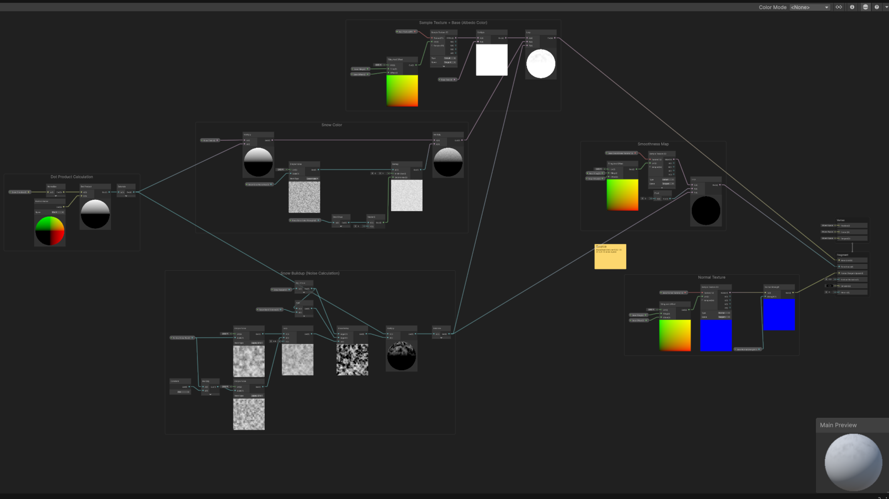
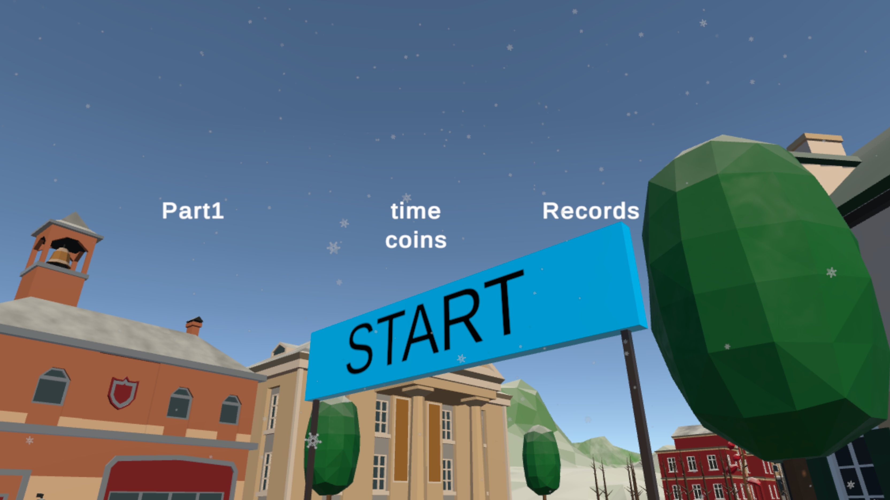
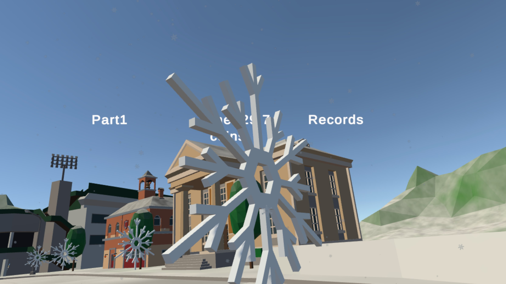

Making it Pretty
Of Snow and Snowflakes
 The parkour covered in snow
The parkour covered in snow
Finally, it was time to make my game look like an actual game. Since my locomotion remotely resembles ice skating I went with a winter theme.
Snow Shader
Naturally, my first association with winter is snow. So I added a snow shader. I found a nice tutorial and followed it to build the appropriate shader graph. 
However, to do this I had to upgrade the project to Unity’s Universal Render Pipeline. Fortunately, Unity provided a guide on how to do this. Nonetheless, I had to reimport TextMeshPro (which to be honest happened more than once over the course of the project). Also, this shader is not a post-processing shader and therefore has to be applied to each material individually it is supposed to affect.
Because the shader allows to set the snow amount, I added a little script to shift the landscape to snow over the first few seconds the player is on the parkour. 
Snowflake Coins
Next, I replaced the coins with snowflakes, which seemed more appropriate to me.
To do this, I created a CAD model of a snowflake in SketchUp and converted it to a .obj.
Then it was rather simple to change the coin prefab to a snowflake, automatically replacing all the coins with snowflakes at once.

Winter Soundscape
To make it feel even more like winter, I changed the soundscape as well. The first thing was to replace the background music - a soundtrack I’ve grown to feel annoyed at over the project. Instead, I opted for a free winter loop. This already felt significantly more festive.
But the other thing I changed was the coin collection sound. Since the coins weren’t coins anymore but snowflakes, I chose a short sample of ice cracking. Together, the parkour instantly felt way more like a winter experience.
App Icons & Splash Screens
Finally, to complete my winter attire, I designed fitting app icons and a loading splash screen.+
I started with the splash screen and christened the project VR-Redirected-Winter.
I also added a little snowflake as the part of the design

For the app icons I chose to only use the little snowflake and had the individual resolutions required for an app icon generated.